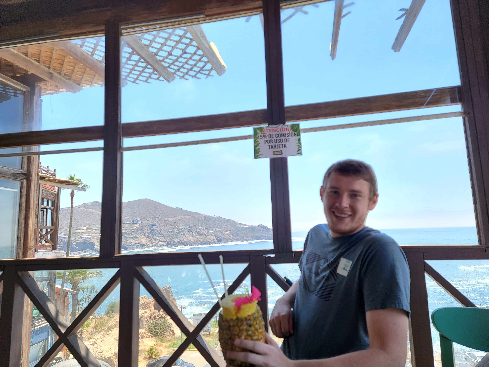

Chris's HomePage
|

|
- Software Developer
- Experience working on the Power BI platform for Microsoft
- Pursuing Bachelors in Computer Science at CSU San Marcos
- Contact Information
>
|
Brief Biography
I am a former Marine, stationed in Camp Pendleton, CA, for 4 years and deployed over seas twice. After my journey in the military I joined a data analytics support team at Microsoft working on the Power BI platform assisting Microsoft partners and customers with in-depth technical issues within the scope of our product and closely related internal products.
Education
- Microsoft Software & Systems Academy: Cyber Security
- IN PROGRESS: Bachelor's Degree in Computer Science
Experience
- 5 Years experience repairing electronic devices and servicing devices infected with malware
- 4 Years experience in Radio & Satellite Communications in the military
- 3 Years Experience as an engineer at Microsoft
Skills
- Customer Support | Critical Analysis | Strong Soft Skills
- Python | Java | C++ | HTML/CSS
- Experience with REST API's and web scraping